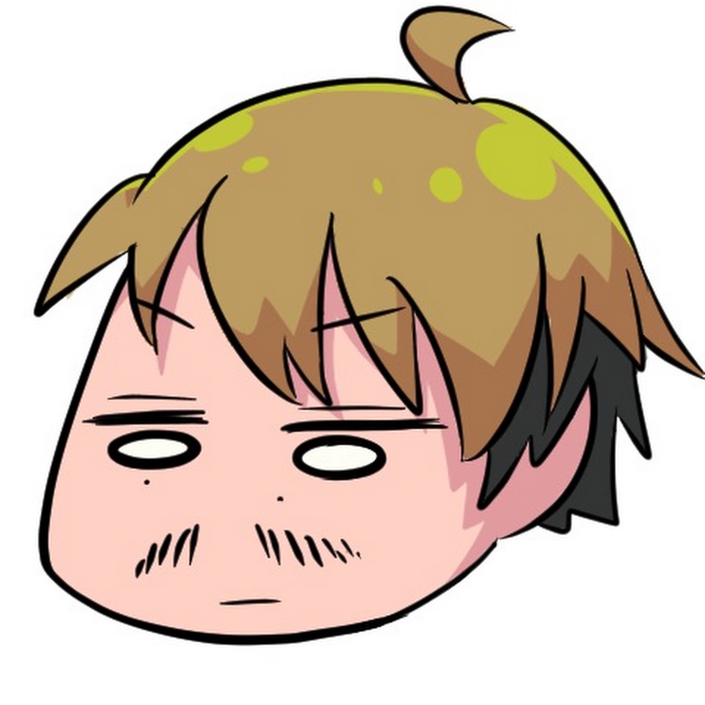

こんにちは！Takuzoooです。 このチャンネルは『セカンドチャンネル』です。 基本的に ・個人的な話 ・自分の考え などをただただ…ひたすら喋るだけです。笑 『ラジオ』感覚でゆる〜くやってます〜 視聴者の方の中には 「聞きながら家事してる」 「映像見てないよ」 とか見方・聴き方は自由です。 前職が学校の先生だったので、学校の「朝の会」をイメージしてますので学生時代を思い出してもら...
https://yamamototti23-sketch.github.io/takuzooo-podcast-rss/feed.xml